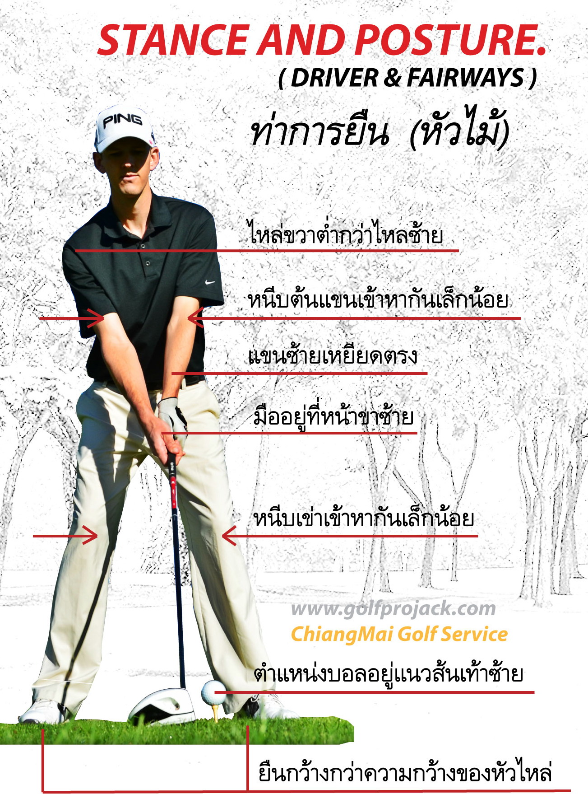

การตีหัวไม้(หัวไม้ 5 3 1)
1. เมื่อทำการ backswing ขึ้นไปให้รถทั้งสองขันออกตัวไปพร้อมๆกันจนกระทั่งเมื่อรถวงในผ่านต้นขาขวาให้รถวงนอกเริ่มแซงขึ้นไปจนถึงตำแหน่ง Top of backswing การทำเช่นนี้จะเป็นการสร้างวงสวิงให้กว้างออกไป และลดอาการขึ้นไม้ชันเกินไปครับ
2. เมื่อขึ้นไม้ไปจนสุดทางรถทั้งสองคันเดินทาง กลับมาจนกระทั่งรถวงในเดินทางมาถึงต้นขาขวา ที่ตำแหน่งนี้เองให้รถวงนอกเร่งเครื่องแซงและเข้าเส้นชัยไปในที่สุดการทำเช่นนี้จะทำให้หน้าไม้เข้าปะทะลูกก่อนมือหรือเป็นการตีเสยเข้าหาลูกนั่นเองครับ
